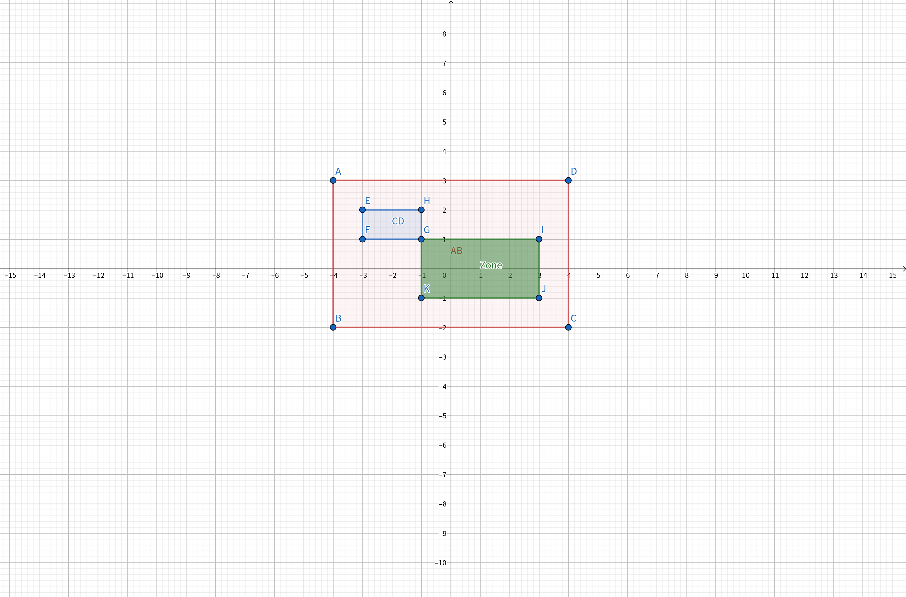

什么是单调队列
单调队列是一种通过某些数据单调性来优化时间复杂度的方法，其时间复杂度为$O(n)$。
单调队列一般将较优解置于队首，保证“优秀度”从队首到队尾递减，且保证队列中元素在原序列中的对应位置递增，通过弹去队首维护合法性、弹去队尾维护优秀性、插入队尾来保证有解。
代码基本形式
while(queue.front()+length<=position_now)queue.pop_front();
ans_now=getans(queue.front());
while(value[queue.back()]<=value[position_now])queue.pop_back();
queue.push_back(position_now);
第一行表示当前队首值在可行区间外（队首不合法），弹掉队首。
第二行表示用当前的队首计算当前答案，因为保证队列中“优秀度”递减因此当前队首计算出的答案是整个队列中最优的。
第三行表示舍弃不优秀的队尾值，即部分当前还没有用来更新答案的并且没有当前值优秀的元素。因为对于当前点后面的位置，当前点更靠近，更优，弹去队尾不优秀元素既不影响后面位置计算答案的合法性（更远的合法则当前点也合法）也保证了答案的优秀性。
纯单调队列例题
[HAOI2007]理想的正方形
题意
有一个$a\times b$的整数组成的矩阵，现请你从中找出一个$n\times n$的正方形区域，使得该区域所有数中的最大值和最小值的差最小。
题解
首先我们知道维护最大值/最小值方法其实相同，就只讲维护最大值。
对于每个$n*n$的矩阵，我们可以先分行考虑，再分列考虑。对于每一行，我们就是维护一维区间上的区间最大值，将得到的每个点$(i,j)$为右端点（左端点也行，感觉不好写）的长n区间的最大值记为$mx_{i,j}$。再对于每一列考虑，得到当第j列作为正方形子矩阵右边线时的子矩形最大值，这一步同样相当于维护一维区间最大值，只是将原数组换为mx数组。
代码
#include<bits/stdc++.h>
using namespace std;
const int N=1002;
int h,w,n,a[N][N],mxl[N][N],mil[N][N],ans=INFINITY;
int f;
void read(int &x)
{
f=1,x=0;char ch=getchar();
while(!isdigit(ch))f=ch=='-'?-1:1,ch=getchar();
while(isdigit(ch))x=(x<<1)+(x<<3)+ch-'0',ch=getchar();
x*=f;
}
deque<int>qmx,qmi;
int main()
{
scanf("%d%d%d",&h,&w,&n);
for(int i=1;i<=h;i++)
for(int j=1;j<=w;j++)read(a[i][j]);
for(int i=1;i<=h;i++)//求mx数组（行内最大值）
{
qmx.clear(),qmi.clear();
for(int j=1;j<=w;j++)
{
while(!qmx.empty()&&a[i][qmx.back()]<=a[i][j])qmx.pop_back();
qmx.push_back(j);
while(!qmi.empty()&&a[i][qmi.back()]>=a[i][j])qmi.pop_back();
qmi.push_back(j);
while(!qmx.empty()&&qmx.front()+n<=j)qmx.pop_front();
while(!qmi.empty()&&qmi.front()+n<=j)qmi.pop_front();
if(j>=n)mil[i][j]=a[i][qmi.front()],mxl[i][j]=a[i][qmx.front()];;
}
}
for(int i=n;i<=w;i++)//求答案
{
qmx.clear(),qmi.clear();
for(int j=1,mx,mi;j<=h;j++)
{
while(!qmx.empty()&&mxl[qmx.back()][i]<=mxl[j][i])qmx.pop_back();
qmx.push_back(j);
while(!qmi.empty()&&mil[qmi.back()][i]>=mil[j][i])qmi.pop_back();
qmi.push_back(j);
while(!qmx.empty()&&qmx.front()+n<=j)qmx.pop_front();
while(!qmi.empty()&&qmi.front()+n<=j)qmi.pop_front();
if(j>=n)mi=mil[qmi.front()][i],mx=mxl[qmx.front()][i],ans=min(ans,mx-mi);
}
}
cout<<ans;
return 0;
}
[HAOI2007]修筑绿化带
题意
给一个$N*M$的大矩阵，对于其中任意一个$A*B$的矩阵的其中任意一个$C*D$子矩阵计算（AB矩阵元素和-CD矩阵元素和）的最大值。
题解
我们发现对于每个确定的AB子矩阵，CD子矩阵的顶点选择范围是确定的一个矩形区域（记做Zone）。那么我们可以先求出CD子矩阵的权值和，然后求解每个可行矩形区域Zone中的答案最大值，就变成与理想的正方形一样的问题了。

这道题的难点有二，其一是上面的思维过程，其二就是代码细节问题了。
对于每个步骤（初始化，单调队列维护矩形区域内最大值等）的边界条件都需要细致思考，建议画图研究，或者将矩阵最大值问题写成函数调用。
代码
#include<bits/stdc++.h>
using namespace std;
const int N=1020;
int n,m,a,b,c,d,o[N][N],s[N][N],mil[N][N],ans;
int f;
void read(int &x)
{
f=1,x=0;char ch=getchar();
while(!isdigit(ch))f=ch=='-'?-1:1,ch=getchar();
while(isdigit(ch))x=(x<<1)+(x<<3)+ch-'0',ch=getchar();
x*=f;
}
inline int cal(int x,int y,int h,int w)
{
return s[x][y]-s[x-h][y]-s[x][y-w]+s[x-h][y-w];
}
int main()
{
scanf("%d%d%d%d%d%d",&n,&m,&a,&b,&c,&d);
for(int i=1;i<=n;i++)for(int j=1;j<=m;j++)read(o[i][j]);
for(int i=1;i<=n;i++)
{
int ss=0;
for(int j=1;j<=m;j++)ss+=o[i][j],s[i][j]=s[i-1][j]+ss;// 矩形区域二维前缀和
}
for(int i=c;i<=n;i++)
for(int j=d;j<=m;j++)o[i][j]=cal(i,j,c,d);// 二位前缀和上差分原理计算 CD 权值和
int hdlt=a-c-1,wdlt=b-d-1;
for(int i=c;i<n;i++)
{
deque<int>q;
for(int j=d;j<m;j++)
{
while(!q.empty()&&o[i][q.back()]>=o[i][j])q.pop_back();
q.push_back(j);
while(!q.empty()&&q.front()+wdlt<=j)q.pop_front();
if(j>=b-1)mil[i][j]=o[i][q.front()];
}
}
for(int i=b-1;i<m;i++)
{
deque<int>q;
for(int j=c;j<n;j++)
{
while(!q.empty()&&mil[q.back()][i]>=mil[j][i])q.pop_back();
q.push_back(j);
while(!q.empty()&&q.front()+hdlt<=j)q.pop_front();
if(j>=a-1)
{
int mi=mil[q.front()][i];
ans=max(ans,cal(j+1,i+1,a,b)-mi);
}
}
}
printf("%d",ans);
}
[SCOI2009]生日礼物
题解
将当前珠子插入队尾，当满足所有颜色珠子都集齐时弹出队首至队首元素不能弹出（只剩一个了），然后计算答案。
代码
#include<bits/stdc++.h>
using namespace std;
int f;
int read(int x=0)
{
x=0;char ch=getchar();
while(!isdigit(ch))ch=getchar();
while(isdigit(ch))x=(x<<1)+(x<<3)+ch-'0',ch=getchar();
return x;
}
const int N=1000020;
struct node
{
int pos,kind;
bool operator <(const node& x)const{return pos<x.pos;}
}o[N];
typedef pair<int,int> pii;
deque<pii>q;
int n,k,tot,cnt[N],appear,ans=INFINITY;
int main()
{
scanf("%d%d",&n,&k);
for(int i=1,ti;i<=k;i++)
{
scanf("%d",&ti);
for(int j=1;j<=ti;j++)
o[++tot]={read(),i};
}
sort(o+1,o+1+n);
for(int i=1;i<=n;i++)
{
cnt[o[i].kind]++,appear+=(bool)(cnt[o[i].kind]==1),q.push_back(make_pair(o[i].kind,o[i].pos));
while(!q.empty()&&cnt[q.front().first]>1)
cnt[q.front().first]--,q.pop_front();
if(appear==k)
ans=min(ans,o[i].pos-q.front().second+1);
}
printf("%d",ans-1);
}
[USACO12MAR]花盆Flowerpot
题解
首先我自己只会$O(nlogn)$的方法。
1# 二分一个W，$O(n)$计算是否有满足区间y最大最小值差>=D的来check。
2# （口胡）离散化建值域线段树维护每个值出现的最靠右位置，然后从左向右扫，依次加入元素，过程中求答案。因为对于确定的右端点需要的最小y值可以lower_bound算得，值域线段树上直接二分得到小于最小y值的值中出现位置最靠右的位置即为最优左端点。
然后dalao教我了一种$O(n)$的神仙做法。
从左向右扫，维护区间最大最小值，每次在第i个位置处得到i右边（包括i）最优符合条件的区间更新答案。具体不好解释，更新规则为维护一个单增的r指针，在i处若其右边的最大值-最小值<D就将r指针右移，将r插入队列同时更新最大最小值，直到最大最小值符合条件，然后计算答案。
#include<bits/stdc++.h>
using namespace std;
int n,D,ans=INFINITY;
list<int>qmx,qmi;
struct node
{
int x,y;
bool operator <(const node& a)const{return x<a.x;}
}o[100020];
int main()
{
scanf("%d%d",&n,&D);
for(int i=1;i<=n;i++)scanf("%d%d",&o[i].x,&o[i].y);
sort(o+1,o+1+n);
qmx.push_back(1),qmi.push_back(1);
for(int i=1,r=1;i<=n;i++)
{
while(!qmx.empty()&&qmx.front()<i)qmx.pop_front();
while(!qmi.empty()&&qmi.front()<i)qmi.pop_front();
while(r<n&&o[qmx.front()].y-o[qmi.front()].y<D)
{
r++;
while(!qmx.empty()&&o[qmx.back()].y<=o[r].y)qmx.pop_back();
while(!qmi.empty()&&o[qmi.back()].y>=o[r].y)qmi.pop_back();
qmx.push_back(r),qmi.push_back(r);
}
if(o[qmx.front()].y-o[qmi.front()].y>=D)ans=min(ans,o[r].x-o[i].x);
}
cout<<(ans==(int)INFINITY?-1:ans);
}
$stO^{stO^{stO}}Orz_{Orz_{Orz}}$